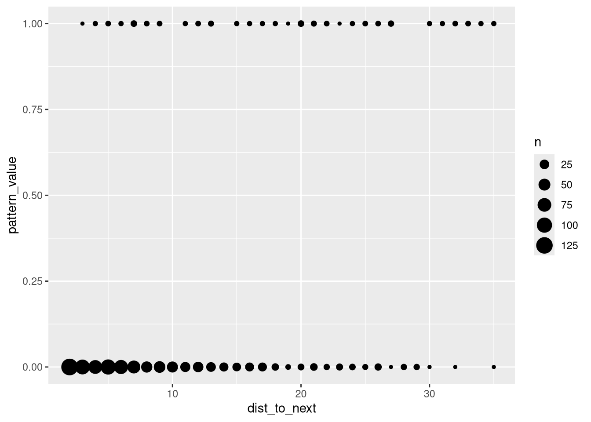
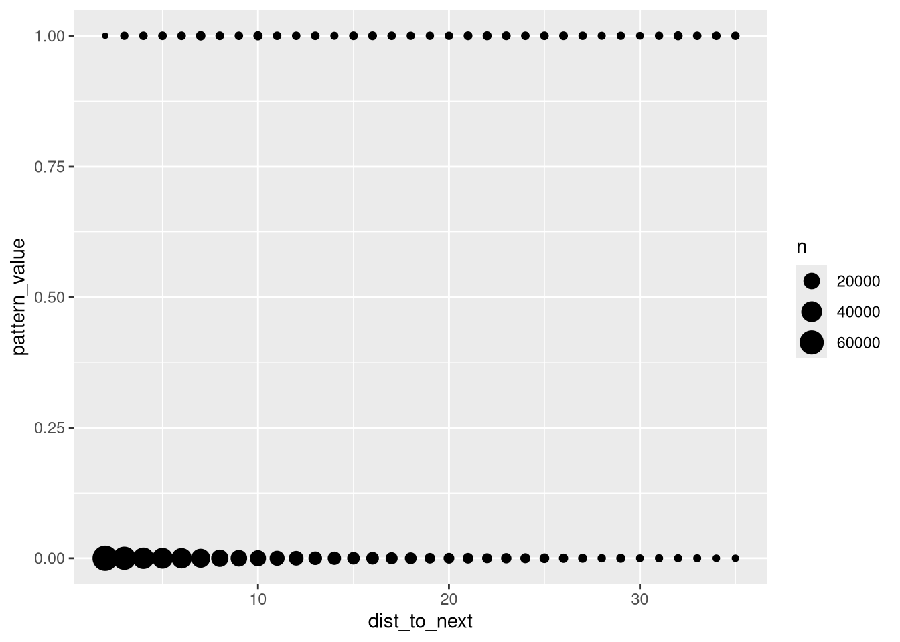
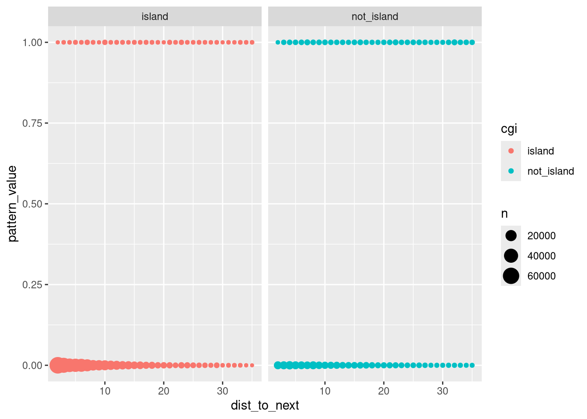
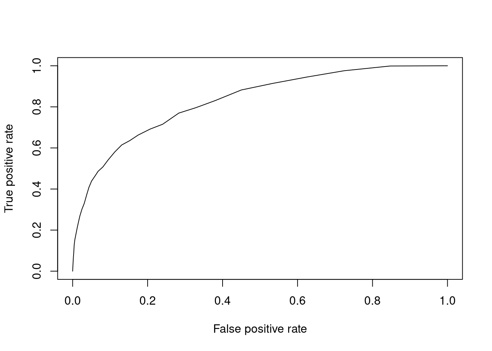
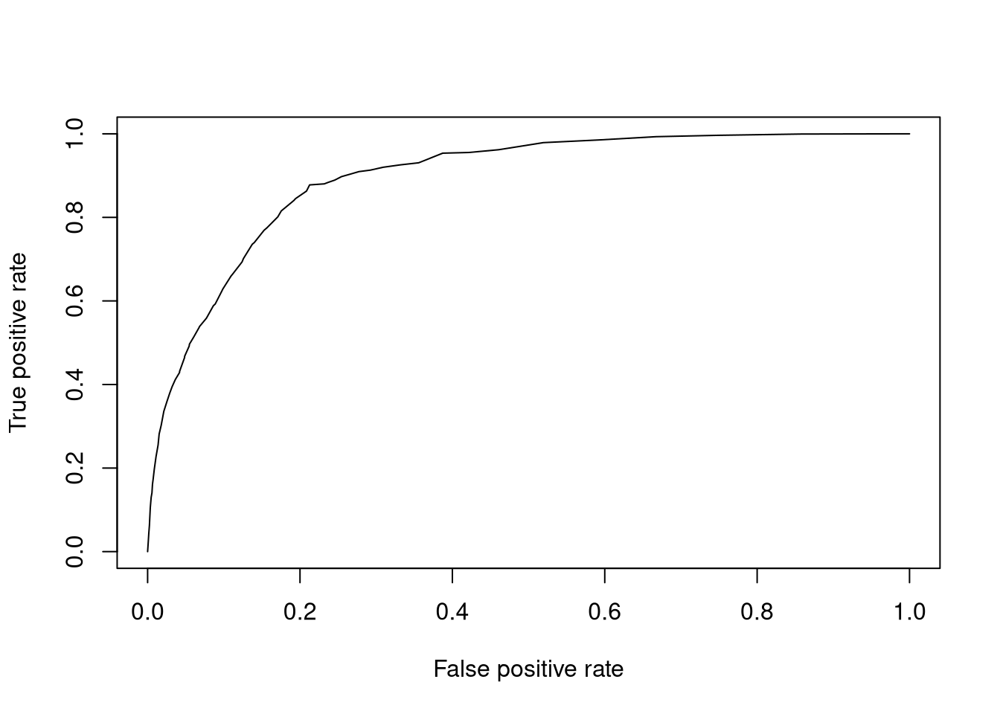
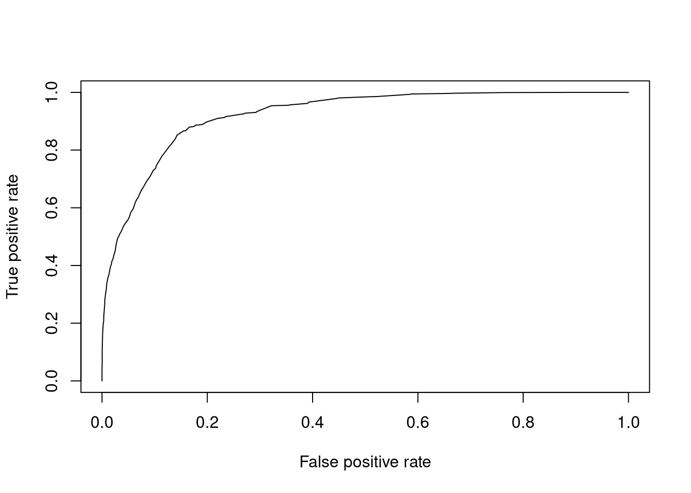

Last updated: 2026-02-05
Checks: 7 0
Knit directory: methyl_nano_cf/analysis/
This reproducible R Markdown analysis was created with workflowr (version 1.7.1). The Checks tab describes the reproducibility checks that were applied when the results were created. The Past versions tab lists the development history.
Great! Since the R Markdown file has been committed to the Git repository, you know the exact version of the code that produced these results.
Great job! The global environment was empty. Objects defined in the global environment can affect the analysis in your R Markdown file in unknown ways. For reproduciblity it’s best to always run the code in an empty environment.
The command set.seed(20250606) was run prior to running
the code in the R Markdown file. Setting a seed ensures that any results
that rely on randomness, e.g. subsampling or permutations, are
reproducible.
Great job! Recording the operating system, R version, and package versions is critical for reproducibility.
Nice! There were no cached chunks for this analysis, so you can be confident that you successfully produced the results during this run.
Great job! Using relative paths to the files within your workflowr project makes it easier to run your code on other machines.
Great! You are using Git for version control. Tracking code development and connecting the code version to the results is critical for reproducibility.
The results in this page were generated with repository version 13074e8. See the Past versions tab to see a history of the changes made to the R Markdown and HTML files.
Note that you need to be careful to ensure that all relevant files for
the analysis have been committed to Git prior to generating the results
(you can use wflow_publish or
wflow_git_commit). workflowr only checks the R Markdown
file, but you know if there are other scripts or data files that it
depends on. Below is the status of the Git repository when the results
were generated:
Ignored files:
Ignored: .Rproj.user/
Ignored: analysis/figure/
Untracked files:
Untracked: renv.lock
Untracked: renv/
Unstaged changes:
Modified: .Rprofile
Modified: _workflowr.yml
Modified: analysis/distAlphaByDistance.Rmd
Modified: analysis/index.Rmd
Note that any generated files, e.g. HTML, png, CSS, etc., are not included in this status report because it is ok for generated content to have uncommitted changes.
These are the previous versions of the repository in which changes were
made to the R Markdown (analysis/comethLogRegress.Rmd) and
HTML (docs/comethLogRegress.html) files. If you’ve
configured a remote Git repository (see ?wflow_git_remote),
click on the hyperlinks in the table below to view the files as they
were in that past version.
| File | Version | Author | Date | Message |
|---|---|---|---|---|
| Rmd | 13074e8 | caitlinpage | 2026-02-05 | wflow_publish("comethLogRegress.Rmd") |
library(annotatr)Warning: replacing previous import 'S4Arrays::makeNindexFromArrayViewport' by
'DelayedArray::makeNindexFromArrayViewport' when loading 'SummarizedExperiment'library(data.table)
library(plyranges)Loading required package: BiocGenerics
Attaching package: 'BiocGenerics'The following objects are masked from 'package:stats':
IQR, mad, sd, var, xtabsThe following objects are masked from 'package:base':
anyDuplicated, aperm, append, as.data.frame, basename, cbind,
colnames, dirname, do.call, duplicated, eval, evalq, Filter, Find,
get, grep, grepl, intersect, is.unsorted, lapply, Map, mapply,
match, mget, order, paste, pmax, pmax.int, pmin, pmin.int,
Position, rank, rbind, Reduce, rownames, sapply, saveRDS, setdiff,
table, tapply, union, unique, unsplit, which.max, which.minLoading required package: IRangesLoading required package: S4VectorsLoading required package: stats4
Attaching package: 'S4Vectors'The following objects are masked from 'package:data.table':
first, secondThe following object is masked from 'package:utils':
findMatchesThe following objects are masked from 'package:base':
expand.grid, I, unname
Attaching package: 'IRanges'The following object is masked from 'package:data.table':
shiftLoading required package: GenomicRangesLoading required package: GenomeInfoDb
Attaching package: 'plyranges'The following object is masked from 'package:IRanges':
sliceThe following object is masked from 'package:data.table':
betweenThe following object is masked from 'package:stats':
filterlibrary(tidyr)
Attaching package: 'tidyr'The following object is masked from 'package:S4Vectors':
expandlibrary(stringr)
library(dplyr)
Attaching package: 'dplyr'The following objects are masked from 'package:plyranges':
between, n, n_distinctThe following objects are masked from 'package:GenomicRanges':
intersect, setdiff, unionThe following object is masked from 'package:GenomeInfoDb':
intersectThe following objects are masked from 'package:IRanges':
collapse, desc, intersect, setdiff, slice, unionThe following objects are masked from 'package:S4Vectors':
first, intersect, rename, setdiff, setequal, unionThe following objects are masked from 'package:BiocGenerics':
combine, intersect, setdiff, unionThe following objects are masked from 'package:data.table':
between, first, lastThe following objects are masked from 'package:stats':
filter, lagThe following objects are masked from 'package:base':
intersect, setdiff, setequal, unionlibrary(ggplot2)
library(ROCR)cg_sites <- cbind(data.frame(Biostrings::matchPattern("CG", BSgenome.Hsapiens.UCSC.hg38::BSgenome.Hsapiens.UCSC.hg38[["chr22"]])), seqnames = "chr22") %>%
mutate(pos = paste0(seqnames, "-", start)) %>%
relocate(pos, seqnames)Warning in .local(x, row.names, optional, ...): 'optional' argument was ignoredcg_sites$index <- 1:nrow(cg_sites)source("../code/processData.R")
for_beta_all <- readRDS("/researchers/caitlin.page/cf_nano/r_output/rrbs_alpha_beta.rds")
#for_beta <- readRDS("../output/cluster_files/rrbs_alpha_beta.rds")
for_beta <- for_beta_all %>% filter(seqnames == "chr22")
rrbs_for_beta_pat <- pat_for_wgbs(for_beta)`summarise()` has grouped output by 'seqnames', 'start_pos', 'meth_pattern',
'alpha', 'end_pos'. You can override using the `.groups` argument.for_beta <- for_beta %>% group_by(start) %>% mutate(coverage = n(), mean_alpha = mean(alpha)) %>% ungroup() %>% data.frame()
just_beta <- for_beta %>% distinct(start, beta, coverage, mean_alpha) %>% .[order(.$start),]mantel_haen_dist_next_cpg <- function(long_data, num_cpg_read = NULL) {
if(!is.null(num_cpg_read)) {
format_data <- long_data %>%
filter(total == num_cpg_read)
} else {format_data <- long_data}
format_data <- format_data %>%
group_by(read_id) %>%
mutate(dist_to_next = lead(start) - start,
meth_pattern = paste0(meth_status, lead(meth_status))) %>%
ungroup() %>%
fill(dist_to_next, .direction = "down") %>%
distinct(read_id, meth_pattern, dist_to_next) %>%
filter(!grepl("A", .$meth_pattern)) %>%
group_by(dist_to_next, meth_pattern) %>%
summarise(count = n()) %>%
ungroup()
chisq_table <- format_data %>%
mutate(cpg_1 = substr(meth_pattern, 1, 1),
cpg_2 = substr(meth_pattern, 2, 2))
# check for missing patterns (it screws up the chi test) and replace with 0
missing_mm <- chisq_table %>% group_by(dist_to_next) %>% filter(!any(grepl("MM", meth_pattern))) %>% distinct(dist_to_next) %>% ungroup() %>% .$dist_to_next
for(i in 1:length(missing_mm)) {
chisq_table <- rbind(chisq_table, c(missing_mm[i], "MM", 0, "M", "M"))
}
missing_mu <- chisq_table %>% group_by(dist_to_next) %>% filter(!any(grepl("MU", meth_pattern))) %>% distinct(dist_to_next) %>% ungroup() %>% .$dist_to_next
for(i in 1:length(missing_mu)) {
chisq_table <- rbind(chisq_table, c(missing_mu[i], "MU", 0, "M", "U"))
}
missing_um <- chisq_table %>% group_by(dist_to_next) %>% filter(!any(grepl("UM", meth_pattern))) %>% distinct(dist_to_next) %>% ungroup() %>% .$dist_to_next
for(i in 1:length(missing_um)) {
chisq_table <- rbind(chisq_table, c(missing_um[i], "UM", 0, "U", "M"))
}
missing_uu <- chisq_table %>% group_by(dist_to_next) %>% filter(!any(grepl("UU", meth_pattern))) %>% distinct(dist_to_next) %>% ungroup() %>% .$dist_to_next
for(i in 1:length(missing_uu)) {
chisq_table <- rbind(chisq_table, c(missing_uu[i], "UU", 0, "U", "U"))
}
chisq_table$count <- as.integer(chisq_table$count)
chisq_table$dist_to_next <- as.integer(chisq_table$dist_to_next)
chisq_table <- chisq_table %>% filter(!is.na(dist_to_next))
chisq_table <- chisq_table %>%
group_by(dist_to_next) %>%
reframe(tab = list(xtabs(count ~ cpg_1 + cpg_2, data = cur_data())))
chisq_table <- chisq_table$tab
names(chisq_table) <- format_data %>%
mutate(dist_to_next = paste0("dist_next_", dist_to_next)) %>%
.$dist_to_next %>%
unique()
distinct_rows <- format_data$dist_to_next %>%
unique() %>%
length()
chisq_table <- simplify2array(chisq_table)
# the testing
try <- capture.output(epiDisplay::mhor(mhtable = chisq_table, graph = FALSE))
try <- try %>% data.frame() %>% .[4:(distinct_rows + 4),] %>% data.frame()
colnames(try) <- "all"
try <- try %>% separate_wider_delim(cols = all, delim = " ", names = c("type", "dist", "numbers"), too_few = "align_start", too_many = "merge")
numeric_lines <- try$numbers
# get Inf and d separate
pattern <- "Inf|-Inf|[-+]?\\d+\\.?\\d*(?:[eE][-+]?\\d+)?"
vals <- regmatches(
numeric_lines,
gregexpr(pattern, numeric_lines))
m <- do.call(rbind, vals)
m <- as.vector(m)
names(m) <- rep(c("OR", "lower_lim", "upper_lim", "p_value"), times = (distinct_rows + 1))
split_vals <- split(m, names(m))
df <- cbind.data.frame(split_vals)
df <- lapply(df, as.double) %>% data.frame()
# merge
try <- cbind(try[,1:2], df[,c(2,1,4,3)])
try <- try %>% mutate(IPD = as.numeric(sub(".*_", "", dist)))
try
}rbloggers statsandr ** longer blog post with more in detail description
for_beta_log <- for_beta_all %>%
filter(total > 1) %>%
group_by(read_id) %>%
mutate(dist_to_next = lead(start) - start,
meth_and_next = paste0(meth_status, lead(meth_status))) %>%
ungroup() %>%
filter(!grepl("A", .$meth_and_next)) %>%
mutate(pattern_type = ifelse(meth_pattern == "MM" | meth_pattern == "UU", "same", "different"),
pattern_value = ifelse(pattern_type == "same", 1, 0))
for_beta_log[,c("dist_to_next", "meth_and_next", "pattern_type", "pattern_value")]# A tibble: 476,921 × 4
dist_to_next meth_and_next pattern_type pattern_value
<int> <chr> <chr> <dbl>
1 9 MU different 0
2 4 UU different 0
3 2 UU different 0
4 13 UM different 0
5 6 MU different 0
6 27 MM same 1
7 12 MM different 0
8 14 MU different 0
9 6 UU different 0
10 28 UU different 0
# ℹ 476,911 more rowsfor_beta_log[1:1000,] %>%
ggplot(aes(x = dist_to_next, y = pattern_value)) +
geom_count() * example looked better - 0s on left and 1s on right * so regression worked * geom_count kinda shows it looks a bit better - at least for 0
nrow(for_beta_log)[1] 476921lots of data
let’s take first 1000 rows
model <- glm(pattern_value ~ dist_to_next, data = for_beta_log[1:1000,], family = "binomial")summary(model)
Call:
glm(formula = pattern_value ~ dist_to_next, family = "binomial",
data = for_beta_log[1:1000, ])
Coefficients:
Estimate Std. Error z value Pr(>|z|)
(Intercept) -4.42725 0.27315 -16.21 <2e-16 ***
dist_to_next 0.15529 0.01494 10.39 <2e-16 ***
---
Signif. codes: 0 '***' 0.001 '**' 0.01 '*' 0.05 '.' 0.1 ' ' 1
(Dispersion parameter for binomial family taken to be 1)
Null deviance: 552.64 on 999 degrees of freedom
Residual deviance: 430.08 on 998 degrees of freedom
AIC: 434.08
Number of Fisher Scoring iterations: 6Pr < 0.05 as expected
this happens when data gets big very easily
residual deviance we want to be close to 0: says a good fit
this is quite high
repeat for all rows
for_beta_log %>%
ggplot(aes(x = dist_to_next, y = pattern_value)) +
geom_count() * plot looks about the same * interesting there’s a clear aspect of distance for not same, but less clear for same
model <- glm(pattern_value ~ dist_to_next, data = for_beta_log, family = "binomial")
summary(model)
Call:
glm(formula = pattern_value ~ dist_to_next, family = "binomial",
data = for_beta_log)
Coefficients:
Estimate Std. Error z value Pr(>|z|)
(Intercept) -4.3854229 0.0123335 -355.6 <2e-16 ***
dist_to_next 0.1511099 0.0006848 220.7 <2e-16 ***
---
Signif. codes: 0 '***' 0.001 '**' 0.01 '*' 0.05 '.' 0.1 ' ' 1
(Dispersion parameter for binomial family taken to be 1)
Null deviance: 249094 on 476920 degrees of freedom
Residual deviance: 195388 on 476919 degrees of freedom
AIC: 195392
Number of Fisher Scoring iterations: 6annots <- c("hg38_cpgs")
annotations <- annotatr::build_annotations(genome = 'hg38', annotations = annots)Building CpG islands...Building CpG shores...Building CpG shelves...Building inter-CpG-islands...seqs <- annotations %>% data.frame() %>% distinct(seqnames) %>% .[1:22,]
annotations <- annotations %>% data.frame() %>% filter(seqnames %in% seqs)
for_beta <- find_overlaps(as_granges(for_beta), as_granges(annotations)) %>% data.frame() %>%
mutate(cgi = ifelse(type == "hg38_cpg_islands", "island", "not_island"))for_beta_log <- for_beta %>%
filter(total > 1) %>%
group_by(read_id, cgi) %>%
mutate(dist_to_next = lead(start) - start,
meth_and_next = paste0(meth_status, lead(meth_status))) %>%
ungroup() %>%
filter(!grepl("A", .$meth_and_next)) %>%
mutate(pattern_type = ifelse(meth_pattern == "MM" | meth_pattern == "UU", "same", "different"),
pattern_value = ifelse(pattern_type == "same", 1, 0))
for_beta_log[,c("cgi", "dist_to_next", "meth_and_next", "pattern_type", "pattern_value")]# A tibble: 475,790 × 5
cgi dist_to_next meth_and_next pattern_type pattern_value
<chr> <int> <chr> <chr> <dbl>
1 island 9 MU different 0
2 island 4 UU different 0
3 island 2 UU different 0
4 island 13 UM different 0
5 island 6 MU different 0
6 not_island 27 MM same 1
7 not_island 12 MM different 0
8 not_island 14 MU different 0
9 not_island 6 UU different 0
10 island 28 UU different 0
# ℹ 475,780 more rowsfor_beta_log %>%
ggplot(aes(x = dist_to_next, y = pattern_value, colour = cgi)) +
geom_count() +
facet_wrap(~cgi) * now we can see that it’s really in the island that this distance thing with not same happens * huh wait this has been saying that more commonly different in the close together * was expecting the other way * also I think this overall means it won’t work very well
model <- glm(pattern_value ~ ., data = for_beta_log[,c("cgi", "dist_to_next", "pattern_value")], family = "binomial")
summary(model)
Call:
glm(formula = pattern_value ~ ., family = "binomial", data = for_beta_log[,
c("cgi", "dist_to_next", "pattern_value")])
Coefficients:
Estimate Std. Error z value Pr(>|z|)
(Intercept) -5.0161466 0.0153577 -326.6 <2e-16 ***
cginot_island 2.1116267 0.0145773 144.9 <2e-16 ***
dist_to_next 0.1171387 0.0007497 156.3 <2e-16 ***
---
Signif. codes: 0 '***' 0.001 '**' 0.01 '*' 0.05 '.' 0.1 ' ' 1
(Dispersion parameter for binomial family taken to be 1)
Null deviance: 246952 on 475789 degrees of freedom
Residual deviance: 170173 on 475787 degrees of freedom
AIC: 170179
Number of Fisher Scoring iterations: 6anova(model, test = "Chisq")Analysis of Deviance Table
Model: binomial, link: logit
Response: pattern_value
Terms added sequentially (first to last)
Df Deviance Resid. Df Resid. Dev Pr(>Chi)
NULL 475789 246952
cgi 1 50225 475788 196727 < 2.2e-16 ***
dist_to_next 1 26553 475787 170173 < 2.2e-16 ***
---
Signif. codes: 0 '***' 0.001 '**' 0.01 '*' 0.05 '.' 0.1 ' ' 1model <- glm(pattern_value ~ ., data = for_beta_log[,c("cgi", "dist_to_next", "meth_and_next", "pattern_value")], family = "binomial")
summary(model)
Call:
glm(formula = pattern_value ~ ., family = "binomial", data = for_beta_log[,
c("cgi", "dist_to_next", "meth_and_next", "pattern_value")])
Coefficients:
Estimate Std. Error z value Pr(>|z|)
(Intercept) -5.205e+00 2.248e-02 -231.588 < 2e-16 ***
cginot_island 2.365e+00 1.723e-02 137.303 < 2e-16 ***
dist_to_next 1.459e-01 8.524e-04 171.137 < 2e-16 ***
meth_and_nextMU -1.880e+01 5.751e+01 -0.327 0.744
meth_and_nextUM -1.880e+01 6.279e+01 -0.299 0.765
meth_and_nextUU -1.191e-01 1.613e-02 -7.387 1.5e-13 ***
---
Signif. codes: 0 '***' 0.001 '**' 0.01 '*' 0.05 '.' 0.1 ' ' 1
(Dispersion parameter for binomial family taken to be 1)
Null deviance: 246952 on 475789 degrees of freedom
Residual deviance: 148055 on 475784 degrees of freedom
AIC: 148067
Number of Fisher Scoring iterations: 18anova(model, test = "Chisq")Analysis of Deviance Table
Model: binomial, link: logit
Response: pattern_value
Terms added sequentially (first to last)
Df Deviance Resid. Df Resid. Dev Pr(>Chi)
NULL 475789 246952
cgi 1 50225 475788 196727 < 2.2e-16 ***
dist_to_next 1 26553 475787 170173 < 2.2e-16 ***
meth_and_next 3 22118 475784 148055 < 2.2e-16 ***
---
Signif. codes: 0 '***' 0.001 '**' 0.01 '*' 0.05 '.' 0.1 ' ' 1set.seed(123)for_beta_log <- for_beta_all %>%
filter(total > 1) %>%
group_by(read_id) %>%
mutate(dist_to_next = lead(start) - start,
meth_and_next = paste0(meth_status, lead(meth_status))) %>%
ungroup() %>%
filter(!grepl("A", .$meth_and_next)) %>%
mutate(pattern_type = ifelse(meth_pattern == "MM" | meth_pattern == "UU", "same", "different"),
pattern_value = ifelse(pattern_type == "same", 1, 0))
for_beta_log <- for_beta_log[,c("dist_to_next", "pattern_type", "pattern_value")]
for_beta_log$row_id <- 1:nrow(for_beta_log)
train <- sample_n(for_beta_log, 100000)
test <- sample_n(filter(for_beta_log, !row_id %in% train$row_id), 50000)model <- glm(pattern_value ~ dist_to_next, data = train, family = "binomial")
summary(model)
Call:
glm(formula = pattern_value ~ dist_to_next, family = "binomial",
data = train)
Coefficients:
Estimate Std. Error z value Pr(>|z|)
(Intercept) -4.401393 0.027105 -162.4 <2e-16 ***
dist_to_next 0.151392 0.001504 100.7 <2e-16 ***
---
Signif. codes: 0 '***' 0.001 '**' 0.01 '*' 0.05 '.' 0.1 ' ' 1
(Dispersion parameter for binomial family taken to be 1)
Null deviance: 51756 on 99999 degrees of freedom
Residual deviance: 40581 on 99998 degrees of freedom
AIC: 40585
Number of Fisher Scoring iterations: 6p <- predict(model, newdata = test, type = "response")
pr <- prediction(p, test$pattern_value)
prf <- performance(pr, measure = "tpr", x.measure = "fpr")
plot(prf)
auc <- performance(pr, measure = "auc")
auc <- auc@y.values[[1]]
auc[1] 0.8290892for_beta_log <- for_beta %>%
filter(total > 1) %>%
group_by(read_id, cgi) %>%
mutate(dist_to_next = lead(start) - start,
meth_and_next = paste0(meth_status, lead(meth_status))) %>%
ungroup() %>%
filter(!grepl("A", .$meth_and_next)) %>%
mutate(pattern_type = ifelse(meth_pattern == "MM" | meth_pattern == "UU", "same", "different"),
pattern_value = ifelse(pattern_type == "same", 1, 0))
for_beta_log <- for_beta_log[,c("cgi", "dist_to_next", "meth_and_next", "pattern_type", "pattern_value")]
for_beta_log$row_id <- 1:nrow(for_beta_log)
train <- sample_n(for_beta_log, 100000)
test <- sample_n(filter(for_beta_log, !row_id %in% train$row_id), 50000)model <- glm(pattern_value ~ ., data = for_beta_log[,c("cgi", "dist_to_next", "pattern_value")], family = "binomial")
summary(model)
Call:
glm(formula = pattern_value ~ ., family = "binomial", data = for_beta_log[,
c("cgi", "dist_to_next", "pattern_value")])
Coefficients:
Estimate Std. Error z value Pr(>|z|)
(Intercept) -5.0161466 0.0153577 -326.6 <2e-16 ***
cginot_island 2.1116267 0.0145773 144.9 <2e-16 ***
dist_to_next 0.1171387 0.0007497 156.3 <2e-16 ***
---
Signif. codes: 0 '***' 0.001 '**' 0.01 '*' 0.05 '.' 0.1 ' ' 1
(Dispersion parameter for binomial family taken to be 1)
Null deviance: 246952 on 475789 degrees of freedom
Residual deviance: 170173 on 475787 degrees of freedom
AIC: 170179
Number of Fisher Scoring iterations: 6p <- predict(model, newdata = test, type = "response")
pr <- prediction(p, test$pattern_value)
prf <- performance(pr, measure = "tpr", x.measure = "fpr")
plot(prf)
auc <- performance(pr, measure = "auc")
auc <- auc@y.values[[1]]
auc[1] 0.894709model <- glm(pattern_value ~ ., data = for_beta_log[,c("cgi", "dist_to_next", "meth_and_next", "pattern_value")], family = "binomial")
summary(model)
Call:
glm(formula = pattern_value ~ ., family = "binomial", data = for_beta_log[,
c("cgi", "dist_to_next", "meth_and_next", "pattern_value")])
Coefficients:
Estimate Std. Error z value Pr(>|z|)
(Intercept) -5.205e+00 2.248e-02 -231.588 < 2e-16 ***
cginot_island 2.365e+00 1.723e-02 137.303 < 2e-16 ***
dist_to_next 1.459e-01 8.524e-04 171.137 < 2e-16 ***
meth_and_nextMU -1.880e+01 5.751e+01 -0.327 0.744
meth_and_nextUM -1.880e+01 6.279e+01 -0.299 0.765
meth_and_nextUU -1.191e-01 1.613e-02 -7.387 1.5e-13 ***
---
Signif. codes: 0 '***' 0.001 '**' 0.01 '*' 0.05 '.' 0.1 ' ' 1
(Dispersion parameter for binomial family taken to be 1)
Null deviance: 246952 on 475789 degrees of freedom
Residual deviance: 148055 on 475784 degrees of freedom
AIC: 148067
Number of Fisher Scoring iterations: 18p <- predict(model, newdata = test, type = "response")
pr <- prediction(p, test$pattern_value)
prf <- performance(pr, measure = "tpr", x.measure = "fpr")
plot(prf)
auc <- performance(pr, measure = "auc")
auc <- auc@y.values[[1]]
auc[1] 0.9222929
sessionInfo()R version 4.4.1 (2024-06-14)
Platform: x86_64-pc-linux-gnu
Running under: Rocky Linux 9.6 (Blue Onyx)
Matrix products: default
BLAS/LAPACK: FlexiBLAS OPENBLAS-OPENMP; LAPACK version 3.9.0
locale:
[1] LC_CTYPE=en_AU.UTF-8 LC_NUMERIC=C
[3] LC_TIME=en_AU.UTF-8 LC_COLLATE=en_AU.UTF-8
[5] LC_MONETARY=en_AU.UTF-8 LC_MESSAGES=en_AU.UTF-8
[7] LC_PAPER=en_AU.UTF-8 LC_NAME=C
[9] LC_ADDRESS=C LC_TELEPHONE=C
[11] LC_MEASUREMENT=en_AU.UTF-8 LC_IDENTIFICATION=C
time zone: Australia/Melbourne
tzcode source: system (glibc)
attached base packages:
[1] stats4 stats graphics grDevices utils datasets methods
[8] base
other attached packages:
[1] ROCR_1.0-12 ggplot2_3.5.2 dplyr_1.1.4
[4] stringr_1.5.1 tidyr_1.3.1 plyranges_1.26.0
[7] GenomicRanges_1.58.0 GenomeInfoDb_1.42.3 IRanges_2.40.1
[10] S4Vectors_0.44.0 BiocGenerics_0.52.0 data.table_1.17.8
[13] annotatr_1.32.0
loaded via a namespace (and not attached):
[1] DBI_1.2.3 bitops_1.0-9
[3] rlang_1.1.6 magrittr_2.0.3
[5] git2r_0.36.2 matrixStats_1.5.0
[7] compiler_4.4.1 RSQLite_2.4.2
[9] GenomicFeatures_1.58.0 png_0.1-8
[11] vctrs_0.6.5 reshape2_1.4.4
[13] pkgconfig_2.0.3 crayon_1.5.3
[15] fastmap_1.2.0 dbplyr_2.5.0
[17] XVector_0.46.0 labeling_0.4.3
[19] utf8_1.2.6 Rsamtools_2.22.0
[21] promises_1.3.3 rmarkdown_2.29
[23] tzdb_0.5.0 UCSC.utils_1.2.0
[25] purrr_1.1.0 bit_4.6.0
[27] BSgenome.Hsapiens.UCSC.hg38_1.4.5 xfun_0.52
[29] zlibbioc_1.52.0 cachem_1.1.0
[31] jsonlite_2.0.0 blob_1.2.4
[33] later_1.4.2 DelayedArray_0.32.0
[35] BiocParallel_1.40.2 parallel_4.4.1
[37] R6_2.6.1 bslib_0.9.0
[39] stringi_1.8.7 RColorBrewer_1.1-3
[41] rtracklayer_1.66.0 jquerylib_0.1.4
[43] Rcpp_1.1.0 SummarizedExperiment_1.36.0
[45] knitr_1.50 readr_2.1.5
[47] httpuv_1.6.16 Matrix_1.7-0
[49] tidyselect_1.2.1 rstudioapi_0.17.1
[51] abind_1.4-8 yaml_2.3.10
[53] codetools_0.2-20 curl_6.4.0
[55] lattice_0.22-6 tibble_3.3.0
[57] regioneR_1.38.0 plyr_1.8.9
[59] withr_3.0.2 Biobase_2.66.0
[61] KEGGREST_1.46.0 evaluate_1.0.4
[63] BiocFileCache_2.14.0 Biostrings_2.74.1
[65] pillar_1.11.0 BiocManager_1.30.26
[67] filelock_1.0.3 MatrixGenerics_1.18.1
[69] whisker_0.4.1 generics_0.1.4
[71] vroom_1.6.5 rprojroot_2.1.0
[73] RCurl_1.98-1.17 BiocVersion_3.20.0
[75] hms_1.1.3 scales_1.4.0
[77] glue_1.8.0 tools_4.4.1
[79] AnnotationHub_3.14.0 BiocIO_1.16.0
[81] BSgenome_1.74.0 GenomicAlignments_1.42.0
[83] fs_1.6.6 XML_3.99-0.18
[85] grid_4.4.1 AnnotationDbi_1.68.0
[87] GenomeInfoDbData_1.2.13 restfulr_0.0.16
[89] cli_3.6.5 rappdirs_0.3.3
[91] workflowr_1.7.1 S4Arrays_1.6.0
[93] gtable_0.3.6 sass_0.4.10
[95] digest_0.6.37 SparseArray_1.6.2
[97] rjson_0.2.23 farver_2.1.2
[99] memoise_2.0.1 htmltools_0.5.8.1
[101] lifecycle_1.0.4 httr_1.4.7
[103] bit64_4.6.0-1